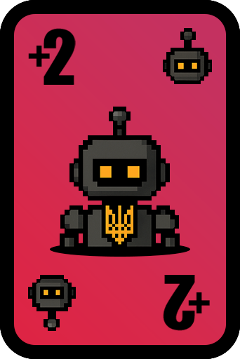
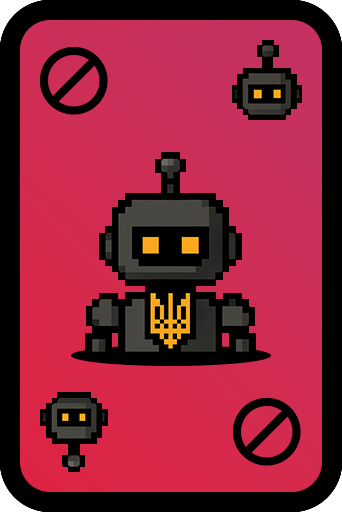
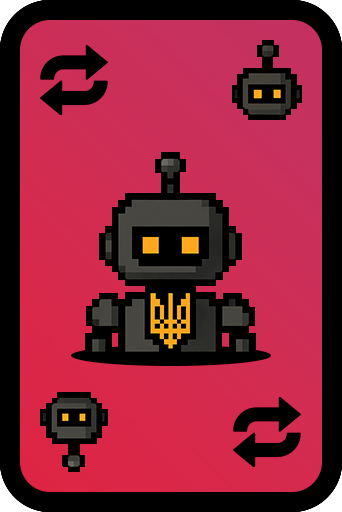
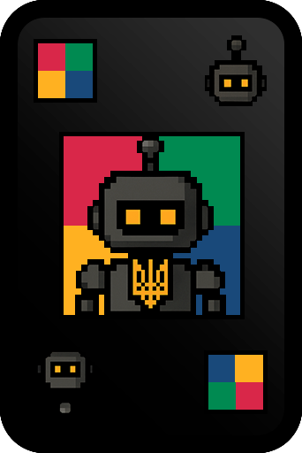
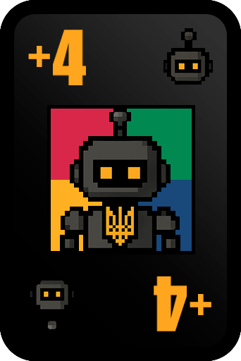
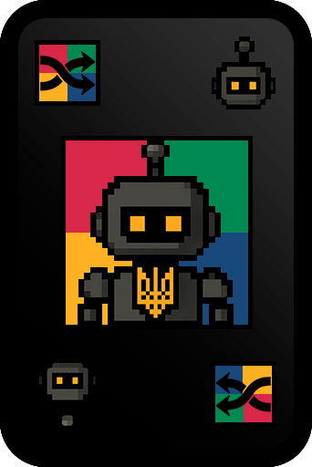

🃏 UNO 🃏
Що це за гра?
Класична карткова гра UNO! Грайте з друзями, використовуйте спеціальні карти та вигравайте. Перший гравець, який позбувся всіх карт, виграє!
Як грати?
- Відправте
/gmstartу групі та оберіть "🃏 UNO 🃏" - Натисніть "Приєднатися" щоб стати гравцем
- Коли збереться достатньо гравців, натисніть "Почати гру"
- Кожен гравець отримує карти
-
Гравці ходять по черзі, викладаючи карти:
- Того ж кольору
- Того ж номера
- Спеціальні карти (Wild, +2, +4, Reverse, Skip)
- Якщо немає підходящої карти, гравець бере з колоди
- Коли у гравця залишається 1 карта, потрібно натиснути "УНО!"
- Перший гравець без карт виграє!
Особливості
- ✅ Класичні правила UNO
- ✅ Спеціальні карти: +2, +4, Reverse, Skip, Wild
- ✅ Вибір кольору (Wild cards)
- ✅ Система очок та рейтингу
- ✅ Автоматичне "УНО!" (опціонально в налаштуваннях)
- ✅ Автоматичне взяття карт до збігу (опціонально)
- ✅ Система втручання (Intervention)
Спеціальні карти

+2 (Draw Two)
Наступний гравець бере 2 карти з колоди та пропускає свій хід. Можна використати карту +2 того ж кольору, щоб передати ефект далі.

Пропустити хід (Skip)
Наступний гравець пропускає свій хід. Можна використати карту Skip того ж кольору або того ж типу.

Реверс (Reverse)
Змінює напрямок гри (за годинниковою стрілкою ↔ проти годинникової стрілки). У грі з двома гравцями працює як Skip.

Вибір кольору (Wild)
Можна використати в будь-який момент. Після використання ви обираєте колір, який має бути наступним. Не додає карт іншим гравцям.

+4 (Draw Four)
Наступний гравець бере 4 карти з колоди та пропускає свій хід. Ви обираєте колір для наступного ходу. Можна використати тільки якщо немає підходящої карти.

Перемішування (Shuffle)
Збирає всі карти всіх гравців, перемішує їх та перерозподіляє порівну між гравцями (кожен отримує стільки ж карт, скільки мав). Після цього ви обираєте колір для наступного ходу.
Команди
/gmstart
Обрати гру
/gmjoin
Приєднатися до UNO
/gmstop
Зупинити гру
/gmleave
Вийти з гри